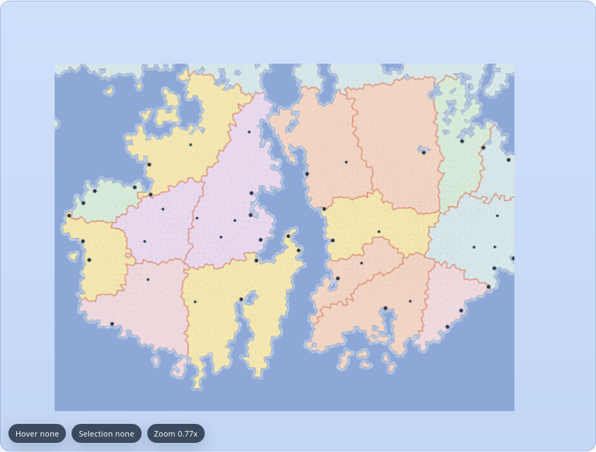

Status: different
Viewport: 900x600
Note: Comparing current local generation parity against upstream FMG fixed seed 42424242 after terrain and politics ports.

 upstream-fmg-seed-42424242-default (dbc5ffc2651403d1254a25bb415287db1ac786782d0219dc7e63e790088faafe)
upstream-fmg-seed-42424242-default (dbc5ffc2651403d1254a25bb415287db1ac786782d0219dc7e63e790088faafe)